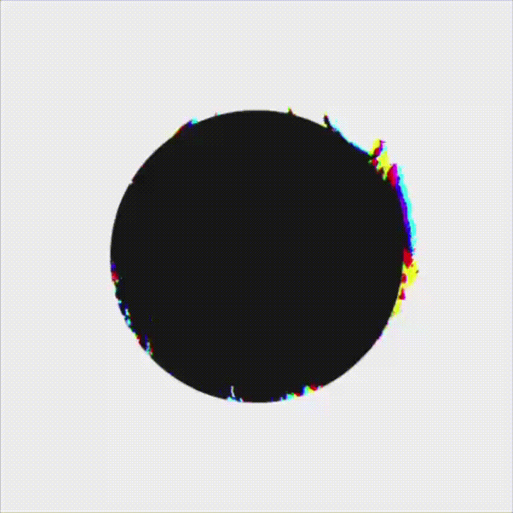
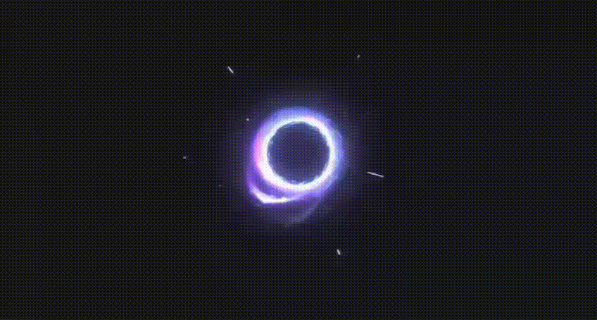
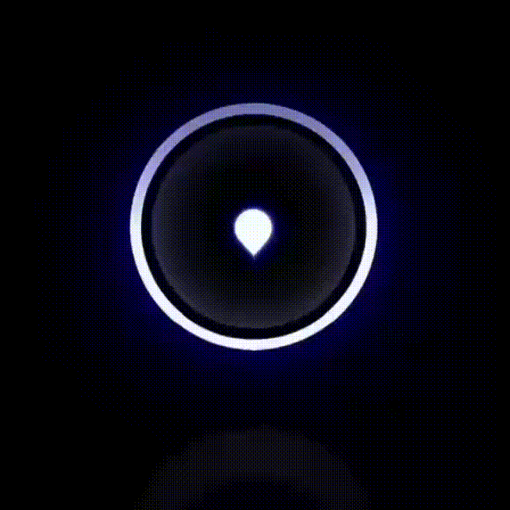
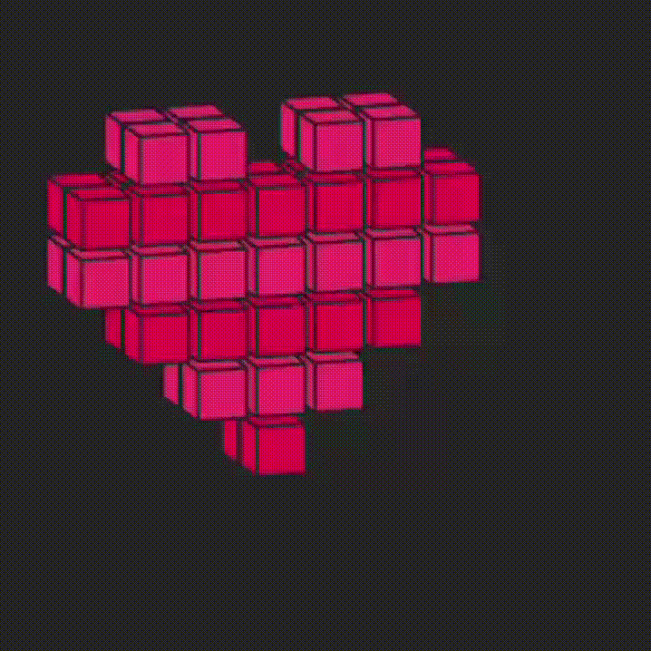

Glitch Black Orb
A black circular orb with subtle jittering edges and chromatic glitch artifacts.
assets/effects/glitch-black-orb/motion.webp
Portable optimized motion assets.

A black circular orb with subtle jittering edges and chromatic glitch artifacts.
assets/effects/glitch-black-orb/motion.webp

A looping abstract neon energy vortex made of colorful swirling particle trails on a black background.
assets/effects/neon-energy-vortex/motion.webp

A looping neon pixel-art grid surface ripples and deforms like a glowing digital membrane.
assets/effects/neon-grid-ripple/motion.webp

Use motion-black.webp for exact black-background rendering; use motion-transparent.webp for overlays.
assets/effects/neon-triangle-morph/motion-transparent.webp

A looping purple glowing energy ring animation suitable for magic portals, sci-fi effects, or charge-up VFX.
assets/effects/purple-energy-ring/motion.webp

A dark sci-fi rotating wireframe torus rendered as a subtle holographic particle mesh.
assets/effects/wireframe-torus-spin/motion.webp

A glowing blue-purple circular spinner animation with rotating dots and energy-ring effects.
assets/loaders/neon-orb-spinner/motion.webp

A neon pink pixel-art voxel heart spins with motion blur on a dark background.
assets/stickers/spinning-pixel-heart/motion.webp